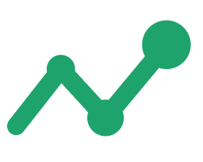

A dor:
A conversa abaixo é uma demonstração com dados fictícios de um fluxo que já roda em produção.
// As etapas, na ordem em que acontecem
// Por dentro
O WhatsApp aceita só um ponto de entrada por número. Por isso existe um roteador: uma peça central que lê cada mensagem que chega e decide qual automação deve responder. Sem ela, a segunda automação nunca receberia nada.
Quer ver esse mesmo passo a passo rodando na sua operação?
Falar com a ModernEasyAutomações construídas e rodando em produção. As conversas desta página são demonstrações com dados fictícios; a Clínica Sorriso é o piloto do fluxo de confirmação.